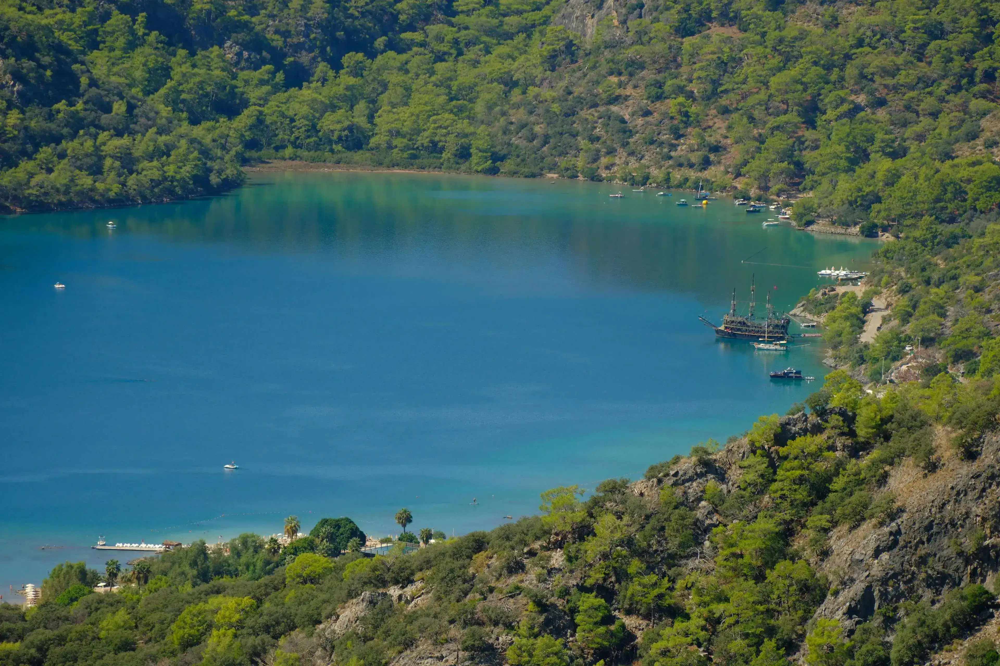
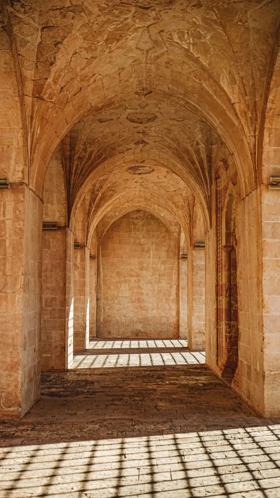
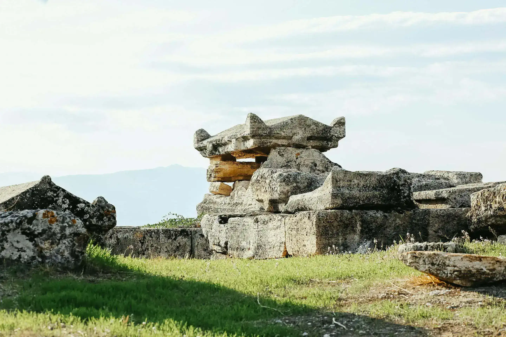

Türkiye Rotaları

Mardin Kültür Turu

Antalya Koy Gezisi

Kapadokya Balon Turu

Fethiye Ölüdeniz

Pamukkale Turu
Uluslararası Rotalar

İspanya Turu

Rusya Sanat Turu

Brezilya Karnavalı
Amerika Batı Kıyısı

Japonya Kış Turu
